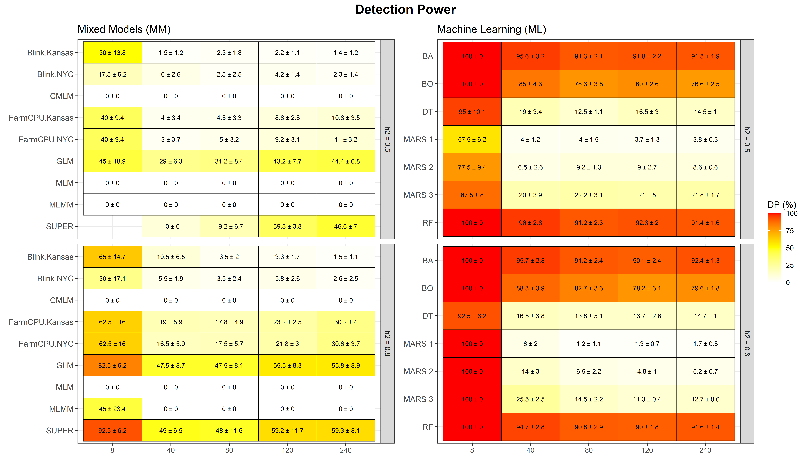
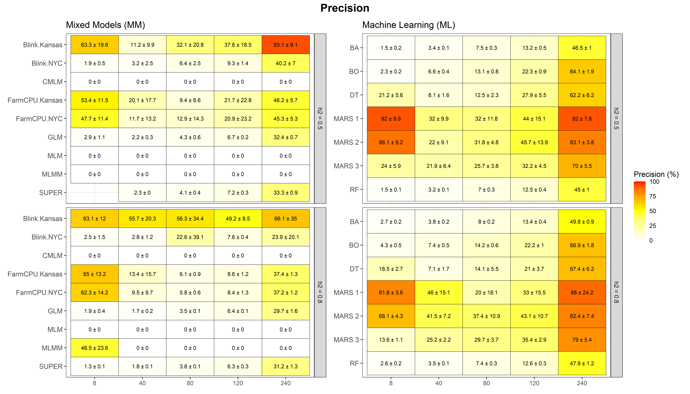
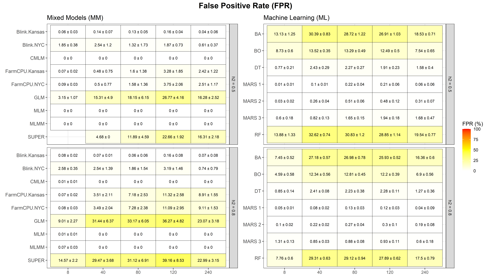
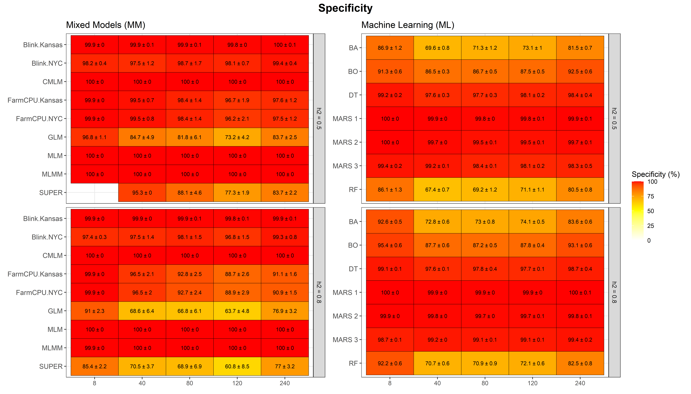
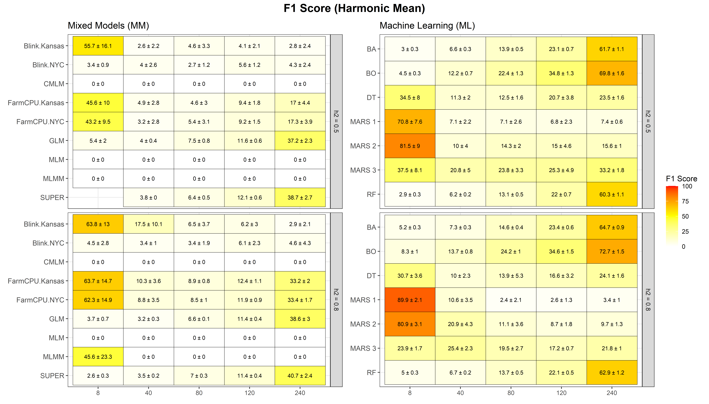

Last updated: 2025-12-01
Checks: 6 1
Knit directory:
Importance-of-markers-for-QTL-detection-by-machine-learning-methods/
This reproducible R Markdown analysis was created with workflowr (version 1.7.2). The Checks tab describes the reproducibility checks that were applied when the results were created. The Past versions tab lists the development history.
The R Markdown is untracked by Git. To know which version of the R
Markdown file created these results, you’ll want to first commit it to
the Git repo. If you’re still working on the analysis, you can ignore
this warning. When you’re finished, you can run
wflow_publish to commit the R Markdown file and build the
HTML.
Great job! The global environment was empty. Objects defined in the global environment can affect the analysis in your R Markdown file in unknown ways. For reproduciblity it’s best to always run the code in an empty environment.
The command set.seed(20221222) was run prior to running
the code in the R Markdown file. Setting a seed ensures that any results
that rely on randomness, e.g. subsampling or permutations, are
reproducible.
Great job! Recording the operating system, R version, and package versions is critical for reproducibility.
Nice! There were no cached chunks for this analysis, so you can be confident that you successfully produced the results during this run.
Great job! Using relative paths to the files within your workflowr project makes it easier to run your code on other machines.
Great! You are using Git for version control. Tracking code development and connecting the code version to the results is critical for reproducibility.
The results in this page were generated with repository version d542938. See the Past versions tab to see a history of the changes made to the R Markdown and HTML files.
Note that you need to be careful to ensure that all relevant files for
the analysis have been committed to Git prior to generating the results
(you can use wflow_publish or
wflow_git_commit). workflowr only checks the R Markdown
file, but you know if there are other scripts or data files that it
depends on. Below is the status of the Git repository when the results
were generated:
Ignored files:
Ignored: .Rproj.user/
Ignored: analysis/GWAS.Rmd
Ignored: analysis/figure/
Ignored: analysis/gwas-GLM.Rmd
Ignored: output/imp.tot.RData
Ignored: output/ml_cv/
Ignored: output/mod.rda
Untracked files:
Untracked: analysis/consolidated_analysis.Rmd
Untracked: analysis/genomic_prediction.Rmd
Untracked: output/BA_Results_Importance_CONSOLIDATED.csv
Untracked: output/BO_Results_Importance_CONSOLIDATED.csv
Untracked: output/DT_Results_Importance_CONSOLIDATED.csv
Untracked: output/MARS 1_Results_Importance_CONSOLIDATED.csv
Untracked: output/MARS 2_Results_Importance_CONSOLIDATED.csv
Untracked: output/MARS 3_Results_Importance_CONSOLIDATED.csv
Untracked: output/ML_Results_Importance_CONSOLIDATED.csv
Untracked: output/ML_Results_Metrics_CONSOLIDATED.csv
Untracked: output/RF_Results_Importance_CONSOLIDATED.csv
Untracked: output/bagging/
Untracked: output/boosting/
Untracked: output/dt/
Untracked: output/gwas_cv/
Untracked: output/gwas_multimodel/
Untracked: output/mars/
Untracked: output/rf/
Unstaged changes:
Modified: output/DP_heatmap.png
Modified: output/F1_Score_heatmap.png
Modified: output/FP_heatmap.png
Modified: output/Precision_heatmap.png
Modified: output/Specificity_heatmap.png
Note that any generated files, e.g. HTML, png, CSS, etc., are not included in this status report because it is ok for generated content to have uncommitted changes.
There are no past versions. Publish this analysis with
wflow_publish() to start tracking its development.
This document details the computational pipeline designed to benchmark Genome-Wide Association Studies (GWAS) against Machine Learning (ML) methods. The process is divided into explicit steps to ensure reproducibility.
The goal is to integrate results from multiple models, standardize their importance scores, and calculate key performance metrics (Detection Power, Precision, FPR, Specificity, and F1 Score) across 10 replicates and 50 cross-validation folds.
In this step, we load the raw result files. We distinguish between Machine Learning (ML) and GWAS files and apply column standardization immediately upon reading. This is crucial because different software outputs may use varying column names (e.g., “SNP” vs. “Marker”, “p.value” vs. “Importance”).
Machine Learning models (Random Forest, MARS, etc.) output Importance Scores (e.g., Gini Impurity, RSS reduction). Since these scores are on different scales (some range from 0-100, others are unbounded), we must load and normalize them.
Process: 1. Identify File: We
target the consolidated ML results file generated in the previous
script. 2. Standardize: We rename columns to a common
format (variable, replicate,
marker, overall). 3.
Normalize: We apply a Min-Max scaling (0 to 10) within
each fold/replicate to make scores comparable across different
algorithms.
# 1. Define the path to the consolidated ML file
# This file was created in the 'genomic_prediction.Rmd' script
ml_files <- "output/ML_Results_Importance_CONSOLIDATED.csv"
# 2. Reading and Cleaning (Explicit Process)
# We use map_dfr to read the file(s) and apply a consistent cleaning function
ml_data <- map_dfr(ml_files, function(f) {
if(!file.exists(f)) return(data.frame())
# Read CSV
df <- read.csv(f)
colnames(df) <- tolower(colnames(df)) # Standardize names to lowercase to avoid case-sensitivity issues
# Explicitly Select and Rename columns
# This mapping ensures that 'var', 'Variable', or 'TRAIT' all become 'variable'
df %>%
rename(
variable = any_of(c("var", "variable")),
replicate = any_of(c("rep", "replicate")),
marker = any_of(c("marker", "marker_idx", "snp")),
overall = any_of(c("overall", "importance", "score")),
fold = any_of(c("fold")),
method = any_of(c("method", "model"))
) %>%
mutate(
# Ensure numeric types for merging
variable = as.numeric(variable),
# robustly clean marker names (e.g., remove "M" prefix if present)
marker = as.numeric(str_replace_all(as.character(marker), "[^0-9]", "")),
replicate = as.numeric(replicate),
fold = as.numeric(fold),
overall = as.numeric(overall),
method = as.character(method),
type = "ML" # Tag to distinguish from GWAS later
) %>%
select(variable, method, marker, replicate, fold, overall, type)
})
# 3. Normalization (Rescale 0-10) within each Fold
# Important: Comparison is only valid if scores share a relative scale.
# We rescale the importance so the maximum importance in any fold is 10.
ml_data <- ml_data %>%
group_by(variable, method, replicate, fold) %>%
mutate(
overall = scales::rescale(overall, to = c(0, 10), finite = FALSE)) %>%
ungroup()
head(ml_data)# A tibble: 6 × 7
variable method marker replicate fold overall type
<dbl> <chr> <dbl> <dbl> <dbl> <dbl> <chr>
1 1 BA 1 1 1 0.815 ML
2 1 BA 2 1 1 0.440 ML
3 1 BA 3 1 1 0.632 ML
4 1 BA 4 1 1 0.534 ML
5 1 BA 5 1 1 0.299 ML
6 1 BA 6 1 1 0.435 ML GWAS models (GLM, FarmCPU, Blink) output P-values. These represent the statistical probability of the association being random.
Process:
# Path to the already unified file from 'models_gapit_gwas.Rmd'
gwas_file <- "output/gwas_cv/GWAS_Results_Importance_CONSOLIDATED.csv"
if (file.exists(gwas_file)) {
# 1. Read single file
df_raw <- read.csv(gwas_file)
# 2. Standardize column names (to lowercase)
colnames(df_raw) <- tolower(colnames(df_raw))
# 3. Cleaning and Selection
gwas_data <- df_raw %>%
rename(
# Map file columns (Variable, Model...) to standard pattern (variable, method...)
variable = any_of(c("variable", "var")),
replicate = any_of(c("replicate", "rep")),
marker = any_of(c("marker", "snp")),
overall = any_of(c("overall", "p.value", "score")),
fold = any_of(c("fold")),
method = any_of(c("model", "method"))
) %>%
mutate(
# Robust type conversion
variable = as.numeric(variable),
# Remove non-numeric characters from marker (e.g., "V1" -> 1)
marker = as.numeric(str_replace_all(as.character(marker), "[^0-9]", "")),
replicate = as.numeric(replicate),
fold = as.numeric(fold),
overall = as.numeric(overall),
method = as.character(method),
type = "GWAS" # Tag to differentiate later
) %>%
# Safety filter to remove corrupted rows (NAs)
filter(!is.na(marker), !is.na(variable)) %>%
select(variable, method, marker, replicate, fold, overall, type)
cat("GWAS data loaded successfully.\n")
cat("Total records:", nrow(gwas_data), "\n")
} else {
warning("File 'GWAS_Results_Importance_CONSOLIDATED.csv' not found in output/gwas_cv/.")
gwas_data <- data.frame()
}GWAS data loaded successfully.
Total records: 31518600 Finally, we stack the two datasets vertically. This creates a master dataset containing every tested marker, for every method, variable, and replicate, ready for the comparative analysis.
# Combine ML and GWAS dataframes
all_data <- bind_rows(ml_data, gwas_data)
cat("Total consolidated records:", nrow(all_data), "\n")Total consolidated records: 52013120 To evaluate the methods, we must define the locations of the true simulated QTLs. We load the base simulation file and expand it to cover all 18 variables, representing different heritability scenarios (\(h^2 = 0.3, 0.5, 0.8\)).
We create two reference structures: 1. Flat Map
(region_map): Used for calculating
Precision and Specificity. Overlapping
windows are merged to prevent double-counting markers as “False
Positives”. 2. ID Reference
(qtl_reference): Used for calculating
Detection Power. Preserves unique QTL IDs to determine
how many distinct genetic signals were successfully detected.
# Load original file (Contains variables 1 to 6)
if(file.exists("data/snpsOfInterest.RData")) {
load("data/snpsOfInterest.RData")
} else {
stop("File 'snpsOfInterest.RData' not found in data/ folder.")
}
# Expansion to include different heritability scenarios
# Variables 1-6 (h2=0.3)
# Variables 7-12 (h2=0.5) - Shifted Copy (+6)
# Variables 13-18 (h2=0.8) - Shifted Copy (+12)
snpsOfInterest <- snpsOfInterest %>%
bind_rows(snpsOfInterest %>% mutate(variable = variable + 6)) %>%
bind_rows(snpsOfInterest %>% mutate(variable = variable + 12))
# Window Parameters
distance <- 5
total_markers_genotype <- 4010
# --- A. Flat Map (For Precision/FP/TN) ---
# We use distinct() to merge overlapping windows into a single boolean "target" region
region_map <- snpsOfInterest %>%
rowwise() %>%
mutate(marker = list(seq(marker - distance, marker + distance))) %>%
ungroup() %>%
unnest(cols = marker) %>%
select(variable, marker) %>%
distinct() %>% # REMOVE DUPLICATE markers (merges overlaps)
mutate(
marker = as.numeric(marker),
is_in_region = TRUE
)
# --- B. Reference with ID (For Detection Power) ---
# We keep the QTL_ID to count how many "unique QTLs" were found (Hit Rate)
qtl_reference <- snpsOfInterest %>%
mutate(QTL_ID = paste0("QTL_", variable, "_", marker)) %>%
rowwise() %>%
mutate(marker = list(seq(marker - distance, marker + distance))) %>%
ungroup() %>%
unnest(cols = marker) %>%
select(variable, marker, QTL_ID)
# --- C. Denominators (For Rates) ---
truth_metadata <- snpsOfInterest %>%
group_by(variable) %>%
summarise(total_QTLs_real = n_distinct(marker), .groups = "drop")
markers_in_target <- region_map %>%
group_by(variable) %>%
summarise(total_target_markers = n_distinct(marker))
truth_metadata <- left_join(truth_metadata, markers_in_target, by = "variable") %>%
mutate(total_noise_markers = total_markers_genotype - total_target_markers)In this step, we apply specific selection thresholds to classify markers as “Significant” (Selected) or “Not Significant”.
Finally, we cross-reference the selected markers with the
region_map to categorize them into the Confusion Matrix
classes: True Positives (TP), False Positives (FP), False Negatives
(FN), and True Negatives (TN).
# Identify GWAS methods from the data
gwas_methods <- unique(gwas_data$method)
# Calculate Thresholds and Selection Status
classified_data <- all_data %>%
group_by(method, variable, replicate, fold) %>%
mutate(
threshold_ml = mean(overall, na.rm=TRUE),
threshold_gwas = -log10(0.05/total_markers_genotype),
is_selected = case_when(
# GWAS Criteria: > Bonferroni
method %in% gwas_methods & overall > threshold_gwas ~ TRUE,
# ML Criteria: > Mean Importance
!(method %in% gwas_methods) & overall > threshold_ml ~ TRUE,
TRUE ~ FALSE
)
) %>%
ungroup() %>%
# Join with Flat Map (Left Join to retain all tested markers)
left_join(region_map, by = c("variable", "marker")) %>%
mutate(
# Markers not found in region_map are "Noise" (FALSE)
is_in_region = replace_na(is_in_region, FALSE),
# Final Classification (Confusion Matrix)
classification = case_when(
is_selected & is_in_region ~ "TP", # True Positive (Hit)
is_selected & !is_in_region ~ "FP", # False Positive (Noise Selection)
!is_selected & is_in_region ~ "FN", # False Negative (Missed QTL)
!is_selected & !is_in_region ~ "TN" # True Negative (Correct Rejection)
)
)In this step, we calculate the raw counts of “hits” and “misses” for each cross-validation fold.
We use the qtl_reference table (which contains unique
QTL IDs) to determine how many distinct QTLs were “tagged” by the
selected markers.
hits_calc <- classified_data %>%
filter(is_selected) %>%
# relationship = "many-to-many" is required because QTL windows may overlap
inner_join(qtl_reference, by = c("variable", "marker"), relationship = "many-to-many") %>%
group_by(variable, method, replicate, fold) %>%
summarise(acerto_qtl = n_distinct(QTL_ID), .groups = "drop")We summarize the marker-level classification to count False Positives (Selection of Noise) and True Negatives (Correct Rejection of Noise).
[Image of confusion matrix precision recall]
marker_stats <- classified_data %>%
group_by(variable, method, replicate, fold) %>%
summarise(
# FP_markers = Error (Selected noise marker)
FP_markers = sum(classification == "FP"),
# TN_markers = Rejection Hit (Correctly ignored noise marker)
TN_markers = sum(classification == "TN"),
.groups = "drop"
)In this step, we merge all classification data and calculate the performance metrics for each replicate. Subsequently, we aggregate the results to obtain the Mean (\(\mu\)) and Standard Deviation (\(\sigma\)) across the 10 replicates.
# Create skeleton to ensure methods with zero selections are included in the stats
skeleton <- classified_data %>% distinct(variable, method, replicate, fold)
# Merge all components
coinc_raw <- skeleton %>%
left_join(truth_metadata, by = "variable") %>%
left_join(hits_calc, by = c("variable", "method", "replicate", "fold")) %>%
left_join(marker_stats, by = c("variable", "method", "replicate", "fold")) %>%
mutate(
# Replace NAs with 0 (for methods that selected nothing)
acerto_qtl = replace_na(acerto_qtl, 0),
FP_markers = replace_na(FP_markers, 0),
TN_markers = replace_na(TN_markers, 0),
# --- METRIC FORMULAS ---
# 1. Detection Power (DP)
# (Unique QTLs Found / Total Real QTLs) * 100
DP = (acerto_qtl / total_QTLs_real) * 100,
# 2. Precision
# (True Hits / Total Selected Signals) * 100
Precision = ifelse((acerto_qtl + FP_markers) == 0, 0,
(acerto_qtl / (acerto_qtl + FP_markers)) * 100),
# 3. False Positive Rate (FP Rate)
# (False Positives / Total Noise Markers) * 100
FP_Rate = ifelse(total_noise_markers == 0, 0,
(FP_markers / total_noise_markers) * 100),
# 4. Specificity
# (True Negatives / Total Noise Markers) * 100
Specificity = ifelse(total_noise_markers == 0, 0,
((total_noise_markers - FP_markers) / total_noise_markers) * 100),
# 5. F1 Score (Harmonic Mean of DP and Precision)
F1_Score = ifelse((DP + Precision) == 0, 0,
2 * ((DP * Precision) / (DP + Precision)))
)
# Calculate Means and Standard Deviations across replicates
coinc_summary <- coinc_raw %>%
group_by(variable, method) %>%
summarise(
DP_mean = mean(DP, na.rm=TRUE),
DP_sd = sd(DP, na.rm=TRUE),
Precision_mean = mean(Precision, na.rm=TRUE),
Precision_sd = sd(Precision, na.rm=TRUE),
FP_mean = mean(FP_Rate, na.rm=TRUE),
FP_sd = sd(FP_Rate, na.rm=TRUE),
Specificity_mean = mean(Specificity, na.rm=TRUE),
Specificity_sd = sd(Specificity, na.rm=TRUE),
F1_Score_mean = mean(F1_Score, na.rm=TRUE),
F1_Score_sd = sd(F1_Score, na.rm=TRUE),
.groups = "drop"
)
# Add Metadata and Classification (MM vs ML)
coinc_plot <- coinc_summary %>%
mutate(
# Classify Heritability
herd = case_when(
variable %in% 1:6 ~ "h2 = 0.3",
variable %in% 7:12 ~ "h2 = 0.5",
variable %in% 13:18 ~ "h2 = 0.8",
TRUE ~ "Unknown"
),
# Classify Number of Genes
ngenes = case_when(
variable %in% c(1, 7, 13) ~ 8,
variable %in% c(2, 8, 14) ~ 40,
variable %in% c(3, 9, 15) ~ 80,
variable %in% c(4, 10, 16) ~ 120,
variable %in% c(5, 11, 17) ~ 240,
variable %in% c(6, 12, 18) ~ 480,
TRUE ~ 999
),
# CORRECTION: Classify GAPIT models as "MM" (Mixed/Statistical Models)
methodology = ifelse(method %in% gwas_methods, "MM", "ML")
)
# Pre-format plot labels (Mean ± SD)
coinc_plot <- coinc_plot %>%
mutate(
label_dp = paste0(round(DP_mean, 1), " ± ", round(DP_sd, 1)),
label_prec = paste0(round(Precision_mean, 1), " ± ", round(Precision_sd, 1)),
label_fp = paste0(round(FP_mean, 2), " ± ", round(FP_sd, 2)),
label_spec = paste0(round(Specificity_mean, 1), " ± ", round(Specificity_sd, 1)),
label_f1 = paste0(round(F1_Score_mean, 1), " ± ", round(F1_Score_sd, 1)),
# Factor Ordering for Plotting
method = factor(method, levels = rev(sort(unique(method)))),
ngenes_f = factor(ngenes, levels = sort(unique(ngenes)))
)Below, we generate comparative heatmaps between Mixed Models (MM) and Machine Learning (ML).
# Plot MM (Statistical Models)
p1 <- coinc_plot %>% filter(methodology == "MM") %>%
ggplot(aes(x = ngenes_f, y = method, fill = DP_mean)) +
geom_tile(color = "black") +
geom_text(aes(label = label_dp), color = "black", size = 2.8) +
scale_fill_gradient2(low = "white", mid = "yellow", high = "red", midpoint = 50, limits = c(0, 100), name = "DP (%)") +
facet_grid(herd ~ ., scales = "free", space = "free") +
labs(title = "Mixed Models (MM)", x = NULL, y = NULL) +
theme_bw() +
theme(legend.position = "none", axis.text.y = element_text(size = 10))
# Plot ML (Machine Learning)
p2 <- coinc_plot %>% filter(methodology == "ML") %>%
ggplot(aes(x = ngenes_f, y = method, fill = DP_mean)) +
geom_tile(color = "black") +
geom_text(aes(label = label_dp), color = "black", size = 2.8) +
scale_fill_gradient2(low = "white", mid = "yellow", high = "red", midpoint = 50, limits = c(0, 100), name = "DP (%)") +
facet_grid(herd ~ ., scales = "free", space = "free") +
labs(title = "Machine Learning (ML)", x = NULL, y = NULL) +
theme_bw() +
theme(axis.text.y = element_text(size = 10), axis.ticks.y = element_line())
final_dp <- (p1 | p2) + plot_annotation(title = "Detection Power", theme = theme(plot.title = element_text(hjust = 0.5, face="bold", size=16)))
print(final_dp)
p1 <- coinc_plot %>% filter(methodology == "MM") %>%
ggplot(aes(x = ngenes_f, y = method, fill = Precision_mean)) +
geom_tile(color = "black") +
geom_text(aes(label = label_prec), color = "black", size = 2.8) +
scale_fill_gradient2(low = "white", mid = "yellow", high = "red", midpoint = 50, limits = c(0, 100), name = "Precision (%)") +
facet_grid(herd ~ ., scales = "free", space = "free") +
labs(title = "Mixed Models (MM)", x = NULL, y = NULL) +
theme_bw() + theme(legend.position = "none", axis.text.y = element_text(size = 10))
p2 <- coinc_plot %>% filter(methodology == "ML") %>%
ggplot(aes(x = ngenes_f, y = method, fill = Precision_mean)) +
geom_tile(color = "black") +
geom_text(aes(label = label_prec), color = "black", size = 2.8) +
scale_fill_gradient2(low = "white", mid = "yellow", high = "red", midpoint = 50, limits = c(0, 100), name = "Precision (%)") +
facet_grid(herd ~ ., scales = "free", space = "free") +
labs(title = "Machine Learning (ML)", x = NULL, y = NULL) +
theme_bw() + theme(axis.text.y = element_text(size = 10), axis.ticks.y = element_line())
final_prec <- (p1 | p2) + plot_annotation(title = "Precision", theme = theme(plot.title = element_text(hjust = 0.5, face="bold", size=16)))
print(final_prec)
p1 <- coinc_plot %>% filter(methodology == "MM") %>%
ggplot(aes(x = ngenes_f, y = method, fill = FP_mean)) +
geom_tile(color = "black") +
geom_text(aes(label = label_fp), color = "black", size = 2.8) +
scale_fill_gradient2(low = "white", mid = "yellow", high = "red", midpoint = 50, limits = c(0, 100), name = "FPR (%)") +
facet_grid(herd ~ ., scales = "free", space = "free") +
labs(title = "Mixed Models (MM)", x = NULL, y = NULL) +
theme_bw() + theme(legend.position = "none", axis.text.y = element_text(size = 10))
p2 <- coinc_plot %>% filter(methodology == "ML") %>%
ggplot(aes(x = ngenes_f, y = method, fill = FP_mean)) +
geom_tile(color = "black") +
geom_text(aes(label = label_fp), color = "black", size = 2.8) +
scale_fill_gradient2(low = "white", mid = "yellow", high = "red", midpoint = 50, limits = c(0, 100), name = "FPR (%)") +
facet_grid(herd ~ ., scales = "free", space = "free") +
labs(title = "Machine Learning (ML)", x = NULL, y = NULL) +
theme_bw() + theme(axis.text.y = element_text(size = 10), axis.ticks.y = element_line())
final_fp <- (p1 | p2) + plot_annotation(title = "False Positive Rate (FPR)", theme = theme(plot.title = element_text(hjust = 0.5, face="bold", size=16)))
print(final_fp)
p1 <- coinc_plot %>% filter(methodology == "MM") %>%
ggplot(aes(x = ngenes_f, y = method, fill = Specificity_mean)) +
geom_tile(color = "black") +
geom_text(aes(label = label_spec), color = "black", size = 2.8) +
scale_fill_gradient2(low = "white", mid = "yellow", high = "red", midpoint = 50, limits = c(0, 100), name = "Specificity (%)") +
facet_grid(herd ~ ., scales = "free", space = "free") +
labs(title = "Mixed Models (MM)", x = NULL, y = NULL) +
theme_bw() + theme(legend.position = "none", axis.text.y = element_text(size = 10))
p2 <- coinc_plot %>% filter(methodology == "ML") %>%
ggplot(aes(x = ngenes_f, y = method, fill = Specificity_mean)) +
geom_tile(color = "black") +
geom_text(aes(label = label_spec), color = "black", size = 2.8) +
scale_fill_gradient2(low = "white", mid = "yellow", high = "red", midpoint = 50, limits = c(0, 100), name = "Specificity (%)") +
facet_grid(herd ~ ., scales = "free", space = "free") +
labs(title = "Machine Learning (ML)", x = NULL, y = NULL) +
theme_bw() + theme(axis.text.y = element_text(size = 10), axis.ticks.y = element_line())
final_spec <- (p1 | p2) + plot_annotation(title = "Specificity", theme = theme(plot.title = element_text(hjust = 0.5, face="bold", size=16)))
print(final_spec)
p1 <- coinc_plot %>% filter(methodology == "MM") %>%
ggplot(aes(x = ngenes_f, y = method, fill = F1_Score_mean)) +
geom_tile(color = "black") +
geom_text(aes(label = label_f1), color = "black", size = 2.8) +
scale_fill_gradient2(low = "white", mid = "yellow", high = "red", midpoint = 50, limits = c(0, 100), name = "F1 Score") +
facet_grid(herd ~ ., scales = "free", space = "free") +
labs(title = "Mixed Models (MM)", x = NULL, y = NULL) +
theme_bw() + theme(legend.position = "none", axis.text.y = element_text(size = 10))
p2 <- coinc_plot %>% filter(methodology == "ML") %>%
ggplot(aes(x = ngenes_f, y = method, fill = F1_Score_mean)) +
geom_tile(color = "black") +
geom_text(aes(label = label_f1), color = "black", size = 2.8) +
scale_fill_gradient2(low = "white", mid = "yellow", high = "red", midpoint = 50, limits = c(0, 100), name = "F1 Score") +
facet_grid(herd ~ ., scales = "free", space = "free") +
labs(title = "Machine Learning (ML)", x = NULL, y = NULL) +
theme_bw() + theme(axis.text.y = element_text(size = 10), axis.ticks.y = element_line())
final_f1 <- (p1 | p2) + plot_annotation(title = "F1 Score (Harmonic Mean)", theme = theme(plot.title = element_text(hjust = 0.5, face="bold", size=16)))
print(final_f1)
The present analysis allows for the following conclusions:
R version 4.5.1 (2025-06-13 ucrt)
Platform: x86_64-w64-mingw32/x64
Running under: Windows 11 x64 (build 26200)
Matrix products: default
LAPACK version 3.12.1
locale:
[1] LC_COLLATE=Portuguese_Brazil.utf8 LC_CTYPE=Portuguese_Brazil.utf8
[3] LC_MONETARY=Portuguese_Brazil.utf8 LC_NUMERIC=C
[5] LC_TIME=Portuguese_Brazil.utf8
time zone: America/Sao_Paulo
tzcode source: internal
attached base packages:
[1] stats graphics grDevices utils datasets methods base
other attached packages:
[1] patchwork_1.3.2 scales_1.4.0 lubridate_1.9.4 forcats_1.0.1
[5] stringr_1.6.0 dplyr_1.1.4 purrr_1.2.0 readr_2.1.6
[9] tidyr_1.3.1 tibble_3.3.0 ggplot2_4.0.1 tidyverse_2.0.0
[13] workflowr_1.7.2
loaded via a namespace (and not attached):
[1] utf8_1.2.6 sass_0.4.10 generics_0.1.4 stringi_1.8.7
[5] hms_1.1.4 digest_0.6.39 magrittr_2.0.4 timechange_0.3.0
[9] evaluate_1.0.5 grid_4.5.1 RColorBrewer_1.1-3 fastmap_1.2.0
[13] rprojroot_2.1.1 jsonlite_2.0.0 processx_3.8.6 whisker_0.4.1
[17] ps_1.9.1 promises_1.5.0 httr_1.4.7 textshaping_1.0.4
[21] jquerylib_0.1.4 cli_3.6.5 rlang_1.1.6 withr_3.0.2
[25] cachem_1.1.0 yaml_2.3.10 otel_0.2.0 tools_4.5.1
[29] tzdb_0.5.0 httpuv_1.6.16 vctrs_0.6.5 R6_2.6.1
[33] lifecycle_1.0.4 git2r_0.36.2 fs_1.6.6 ragg_1.5.0
[37] pkgconfig_2.0.3 callr_3.7.6 pillar_1.11.1 bslib_0.9.0
[41] later_1.4.4 gtable_0.3.6 glue_1.8.0 Rcpp_1.1.0
[45] systemfonts_1.3.1 xfun_0.54 tidyselect_1.2.1 rstudioapi_0.17.1
[49] knitr_1.50 farver_2.1.2 htmltools_0.5.8.1 labeling_0.4.3
[53] rmarkdown_2.30 compiler_4.5.1 getPass_0.2-4 S7_0.2.1